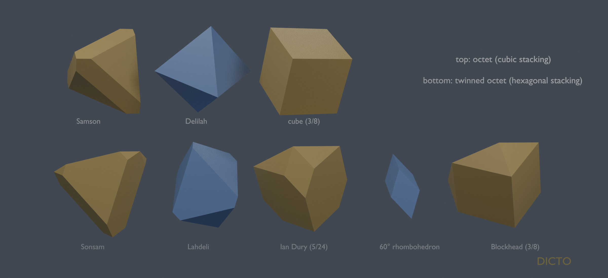
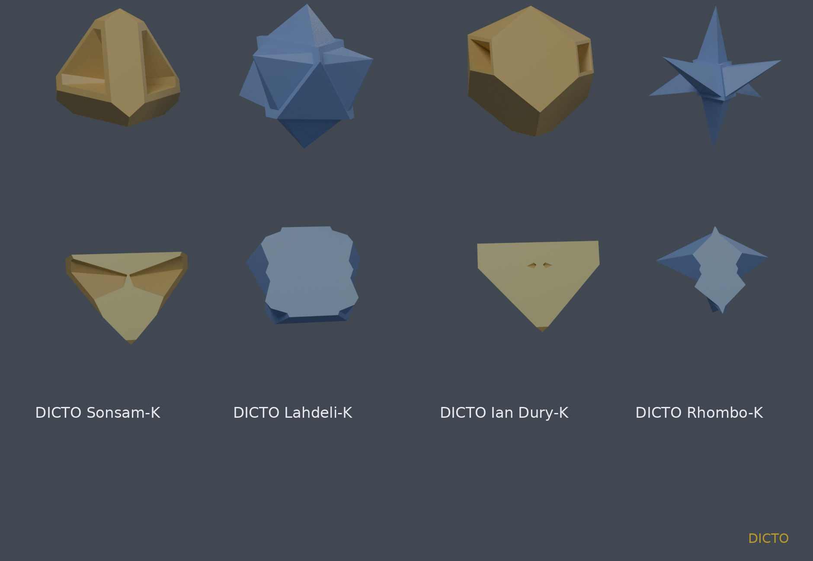
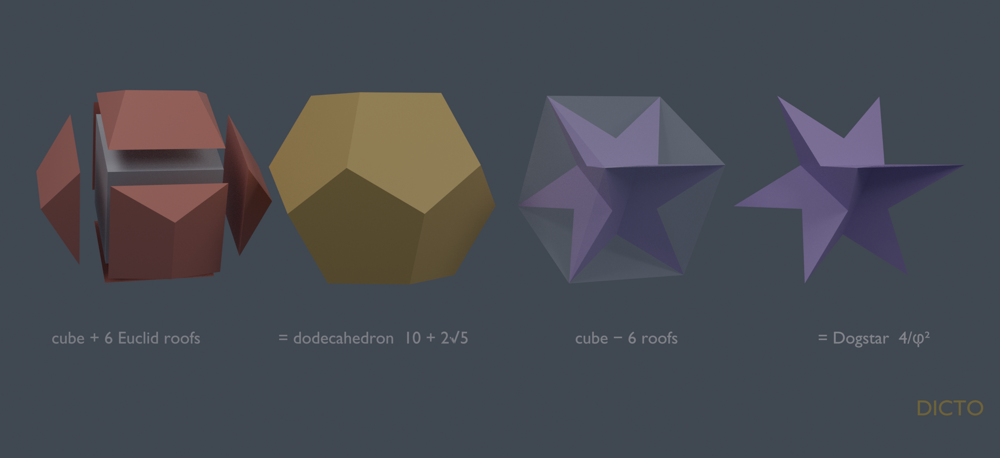

Theorem: on the holes of ideal hexagonal close packing (the twinned octet) the weight walk of paper #53 passes, exactly, through the octet, then one point where all pieces have equal volume √2/6 (Sonsam and Lahdeli, at the single root of an irreducible cubic), then a stop of Ian Durys and 60° rhombohedra (13√2/54 and √2/54), and ends in Blockheads alone (√2/4); on the cubic octet the same walk goes from the octet straight to cubes, with Samson and Delilah equal at λ = 3/8 − ∛4/4.

After #53 and #55 [1, 2] DICTO theorised that more bonds might be "hiding in plain sight" in the census networks, proposed other rhythms of volume than equality (doubling, tripling), and proposed looking for a bond network "similar but different" to the golden and the Delian. We searched the seven three-dimensional census walks for points where the two kinds of piece stand in a simple volume ratio (1, 2, 3, 4 and their inverses, φ±1, φ±2, 1 + √2). Most of them give no new shape: on rock salt and zinc blende the ratio passes every value with the same two shapes, and the Laves phase gives the classical Frank–Kasper cells. One walk did give new shapes: the twinned octet. DICTO then proposed keyed versions of the new pairs, and named them all.
Plain words: each gap gets a share of space; a weight decides how big a share; slide it and the shares change shape.
The sites are the octahedral and tetrahedral holes of ideal hexagonal close packing (ball spacing 1): per cell two octahedral and four tetrahedral sites, cell volume √2. Each site gets a weight, woct = 0 and wtet = λ, and owns the points x with |x − p|² − wp smallest: a power diagram [5], whose cells are convex, fill space face to face and change only at isolated values of λ. Two cells sharing a face are bonded; the web of bonds is the graph whose nodes are the cells and whose links are the shared faces [6]. The walk is λ sliding from one value to another; the web stays the same on each open stretch and rewires only at the stretch ends, the stops, which are the finitely many λ at which a face of some cell shrinks to nothing or appears [1, 5]. Units and λ are those of the census [1] (data file hcpholes), the same as for the cubic octet ("delian") there, so the two walks compare directly. Exact computations are in ℚ(√2) and in the exact real roots of integer polynomials (sympy), with the census engine; the keyed solids are float constructions (manifold3d) with the checks stated.
Proof. The census [1] computed every stretch of both walks exactly; checks.py [S] re-derives what the theorem uses from the census engine. On the stretch (−1/8, 5/24) each cell's volume is a cubic polynomial in λ; all four tetrahedral sites give the same one, and Vtet − Voct is −3√2/6144 times the stated cubic. The cubic has no rational root (by the rational-root test none of the candidates ±d/e, d | 11, e | 1536, is a root), so, being of degree 3, it is irreducible over ℚ; it has exactly one root in the stretch. The census finds each stretch's ends exactly, as the λ where a face of some cell shrinks to nothing, and the stretches abut, so no stop is missed. Two octahedral and four tetrahedral pieces fill the cell of volume √2, so at equal volume each is √2/6. At 5/24 and 3/8 the volumes follow by evaluating the polynomials of the adjacent stretches (they agree from both sides), and the rhombohedron's √2/54 is (1/3)³/√2, the volume of a 60° rhombohedron of edge 1/3. The cubic octet's equal-volume point and Samson's and Delilah's volume are checked the same way. All 16 checks pass. □
The webs of bonds. Each stop is a rewiring of the web (bonds per piece, from the census [1]): at the octet, on the cubic side each octahedron bonds to 8 tetrahedra and each tetrahedron to 4 octahedra, while on the twinned side each octahedron bonds to 6 tetrahedra and 2 octahedra (its column) and each tetrahedron to 3 octahedra and 1 tetrahedron (across the mirror plane); at 5/24 on the twinned side each rhombohedron keeps only its 6 bonds to Ian Durys, and each Ian Dury has 3 rhombohedron and 10 Ian Dury bonds; at 3/8 the octahedral sites have dropped out of the web, and the tetrahedral sites are bonded 6 to a cube on the cubic side and 10 to a Blockhead on the twinned side. The equal-volume points are not rewirings: there the web is the one of its stretch, and what is special is the balance of the two kinds. The census [1] lists the bonds of every piece on every stretch.
| stop | cubic octet | twinned octet |
|---|---|---|
| λ = −1/8 | octahedra + tetrahedra | octahedra + tetrahedra, twinned |
| equal volume √2/6 | Samson + Delilah, λ = 3/8 − ∛4/4 | Sonsam + Lahdeli, root of the cubic |
| λ = 5/24 | (no stop) | Ian Dury 13√2/54 + 60° rhombohedron √2/54 |
| λ = 3/8 | cubes | Blockheads √2/4 |
Plain words: the mirrored stacking makes the same journey with one extra stop, and every piece on the way has a mirrored twin of a cubic piece.
Counts. Sonsam: 19 corners, 30 edges, 13 faces; Lahdeli: 12, 18, 8; Ian Dury: 16, 27, 13; Blockhead: 10, 18, 10 (each satisfies corners − edges + faces = 2, and the face sizes add up to twice the edges). Coordinates of all pieces are in the study files [S] (the census data and the OBJ files of the figures).
Sonsam's nine-sided face lies on a mirror plane of the stacking, between two tetrahedral sites facing each other across it; it is therefore a bond between two Sonsams, and no keying between the two kinds can remove it. Lahdeli, with its two triangles and six pentagons, is Delilah's twin; on the cubic side, at the same point of the walk, Delilah is a regular octahedron. Ian Dury has only the angles of the cube family (35.26°, 54.74°, 90°, 120°, 135°). Blockhead stands where the cubic walk has its cube, and has the same volume √2/4, since both are a quarter of a cell of volume √2. The 60° rhombohedron is classical (two regular tetrahedra and a regular octahedron make one); it is not new and has no new name.
Plain words: if two pieces touch, a bump can move from one into a dent in the other, and the pieces still fill space.
We applied it to the new pairs with a cone over each shared face, shrunk to 80% about its centre (the size used for DICTO's earlier keyed pairs; smaller keys give the same shapes in miniature, larger ones make knife edges), with apex at the giving piece's centre (option A), or a tetrahedral tooth (option B), both directions; a keying was kept when each piece stayed one solid without holes and the cell volume was conserved. For Sonsam and Lahdeli three keyings pass; DICTO chose Sonsam giving cones to Lahdeli: Sonsam-K (≈ 0.1735) and Lahdeli-K (≈ 0.3602). For Ian Dury and the rhombohedron three pass; DICTO chose Ian Dury giving cones: Ian Dury-K (≈ 0.3111) and Rhombo-K (≈ 0.0849), the rhombohedron grown into a six-pointed star (Figure 2). These volumes are floats (double precision; each removed key's base is set 10−4 past its face so that it cuts cleanly, which moves the volumes by less than 10−4); the shapes are defined exactly by the rule.

Paper #42 [4] set regular dodecahedra on alternate cubes of a cubic grid, built the dodecahedron as Euclid's cube with a roof on each face [7], and proved that each other cube is filled by a Dogstar, Hart's stellation 8 [8]: the cube minus the six roofs that reach into it. Those facts are #42's, and #42 also set blocks of eight dodecahedra rock-salt fashion. The reading added here joins them to #53: dodecahedra and Dogstars sit on the two sites of rock salt, whose walk has a single switch point where every cell is a cube and only unlike sites are bonded [1]. By the keying lemma, moving each roof from its Dogstar cube to the dodecahedron next to it keeps that switch point's tiling and web: the Sunstar lattice is rock salt's switch point, keyed with Euclid's roofs (Figure 3). With cube edge 2: dodecahedron 10 + 2√5, each roof 2φ/3, Dogstar 6 − 2√5 = 4/φ², the two together 16, two cubes; the app's solids agree with cube ± roofs to 10−7 [S].

Known and credited: power diagrams [5]; the census walks, the cubic octet's pieces and Samson and Delilah [1, 3]; the octet and its twinned form; the 60° rhombohedron; Euclid's roofs [7]; the Dogstar and the Sunstar lattice with their exact proofs [4, 8]; the Frank–Kasper cells of the Laves phase. Not found in the sources checked: Sonsam, Lahdeli, Ian Dury and Blockhead as solids, the twinned walk's equal-volume point, and the keyed forms; and the reading of the Sunstar lattice as a keyed switch point of rock salt. Searched: DICTO's reference library (four ask-library queries on Voronoi and power cells of the holes of hexagonal close packing), and two web searches, which found descriptions of the holes (number and size) but not of the cells around them. These solids are easy to compute, so an unnamed drawing of them may exist.
[1] DICTO, "The Global Web of Bonds: How Bonds Hand Over Across Crystal Networks", paper #53, DICTO DOI: 10.5281/zenodo.23631140 (2026).
[2] DICTO, "David and Goliath: Jessen's Icosahedron and the Tetrahedron in the A15 Weight Walk", paper #55, DICTO DOI: 10.5281/zenodo.23632358 (2026).
[3] DICTO, "The Delian Bond: Samson, Delilah and the Octet Between Kepler's Rhombic Dodecahedron and the Cube", paper #51, DICTO DOI: 10.5281/zenodo.23606828 (2026).
[4] DICTO, "The DICTO Sunstar", paper #42, DICTO DOI: 10.5281/zenodo.23497702 (2026).
[5] F. Aurenhammer, "Power diagrams: properties, algorithms and applications", SIAM Journal on Computing 16 (1987) 78–96, doi:10.1137/0216006.
[6] DICTO, "The Web of Bonds: How the DICTONIC Bonds Hand Over", paper #52, DICTO DOI: 10.5281/zenodo.23629252 (2026).
[7] Euclid, The Thirteen Books of the Elements, tr. T. L. Heath, vol. III (Books X–XIII), Cambridge (1908), Book XIII, Proposition 17.
[8] G. W. Hart, Tetrahedral stellations of the dodecahedron (1996), https://www.georgehart.com/virtual-polyhedra/stellations-dodecahedron-tetrahedral.html (stellation 8).
[S] DICTO, studies/2026-10-25-hidden-bonds (meaning-point search, equal_volume_exact.py, keyed_gyrated.py, keyed_iandury.py, twin_stops.py, renders) and studies/2026-10-25-sunstar-keyed (proof.py, compare_dogstar.py), commit __COMMIT__; papers/2026-10-25-keyed-switch/checks/checks.py → checks.txt (16 PASS).